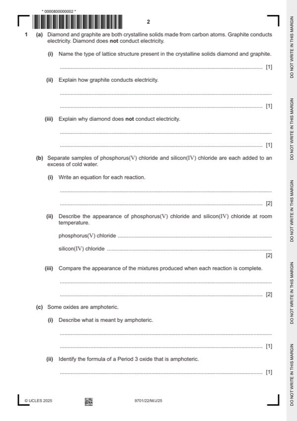

Question 1

Original paper page 2
Part 1(a)(i) — solution
(both) giant molecular 1
Mark points
- Include the ideas shown in the solution above.
Part 1(a)(ii) — solution
Answer: OR delocalised electrons move through / between the layers
delocalised electrons move through the structure 1
OR delocalised electrons move through / between the layers
Mark points
- Correct result: OR delocalised electrons move through / between the layers
Part 1(a)(iii) — solution
Answer: OR all (4) outer electrons are used in bonding
no delocalised electrons (to carry charge through the structure) 1
OR all (4) outer electrons are used in bonding
Mark points
- Correct result: OR all (4) outer electrons are used in bonding
Part 1(b)(i) — solution
- PCl5 +4H2O → H3PO4 + 5HCl 1
- SiCl4 + 2H2O → SiO2 + 4HCl 1
Mark points
- PCl5 +4H2O → H3PO4 + 5HCl 1
- SiCl4 + 2H2O → SiO2 + 4HCl 1
Part 1(b)(ii) — solution
- [M1] phosphorus(V) chloride white / yellow solid 2
- [M2] silicon(IV) chloride colourless liquid
Mark points
- [M1] phosphorus(V) chloride white / yellow solid 2
- [M2] silicon(IV) chloride colourless liquid
Part 1(b)(iii) — solution
- [M1] (phosphorus(V) chloride) produces colourless solution 2
- [M2] silicon(IV) chloride produces white suspension / white precipitate (in a colorless liquid / mixture / solution)
Mark points
- [M1] (phosphorus(V) chloride) produces colourless solution 2
- [M2] silicon(IV) chloride produces white suspension / white precipitate (in a colorless liquid / mixture / solution)
Part 1(c)(i) — solution
Answer: OR species reacts with (both) acid and base
species behaves as acid and base 1
OR species reacts with (both) acid and base
Mark points
- Correct result: OR species reacts with (both) acid and base
Part 1(c)(ii) — solution
Al2O3 1
Mark points
- Include the ideas shown in the solution above.
Part 1(d)(i) — solution
Answer: 3
3
SO2 –73 pd
H2O 0 H
SiO2 1600 C
Na2O 1132 I
MgO 2852 I
University Press & Assessment 2025 Page 7 of 14
9701/22 Cambridge International AS & A Level – Mark Scheme May/June 2025
Mark points
- Correct result: 3
Part 1(d)(ii) — solution
Answer: OR SO2 and / or H2O does not break covalent bonds · OR only SiO2 breaks covalent bonds
- [M1] not enough information
- [M2] SO2 and / or H2O break intermolecular forces
Mark points
- [M1] not enough information
- [M2] SO2 and / or H2O break intermolecular forces
Part 1 — solution
Answer: OR compared to mass of one atom of C-12
OR compared to mass of one atom of C-12
Mark points
- Correct result: OR compared to mass of one atom of C-12
Part 1 — solution
- [M2] relative / compared to of the mass of one mol of C-12 atoms/isotopes
Mark points
- [M2] relative / compared to of the mass of one mol of C-12 atoms/isotopes